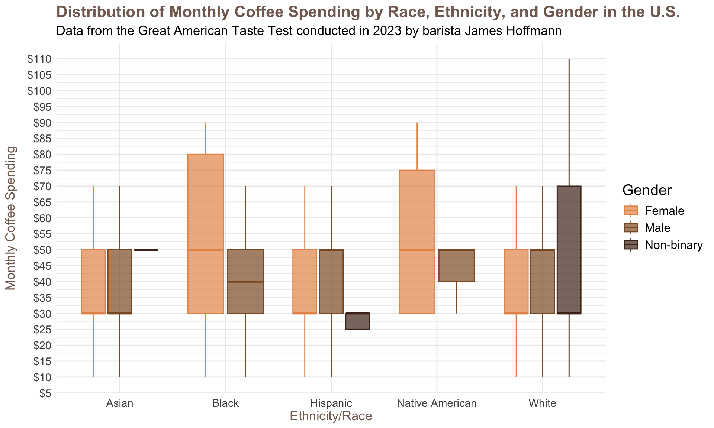
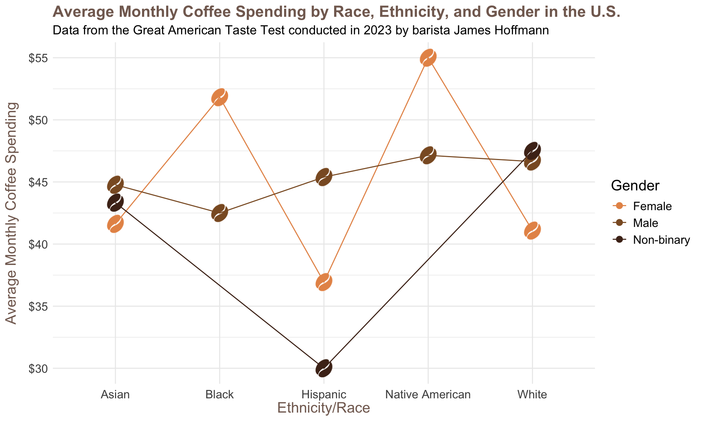
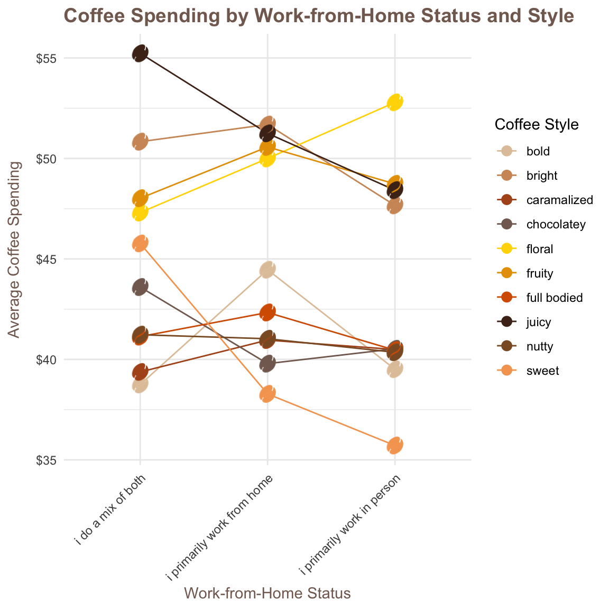
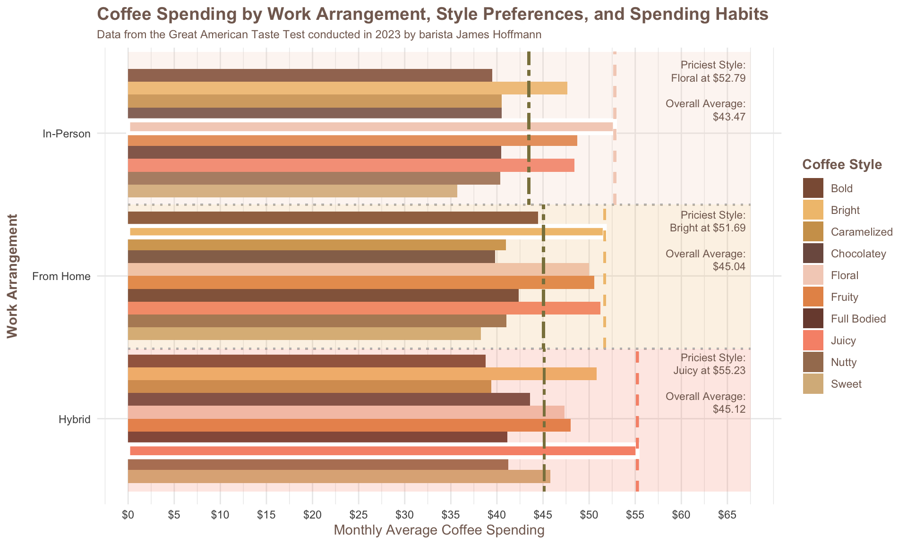

The following package(s) will be installed:
- ggimage [0.3.3]
These packages will be installed into "~/Documents/INFO 5312/proj-01-giving-vibe/renv/library/macos/R-4.4/aarch64-apple-darwin20".
# Installing packages --------------------------------------------------------
- Installing ggimage ... OK [linked from cache]
Successfully installed 1 package in 28 milliseconds.How does coffee spending vary based on demographic and lifestyle factors?
Dataset Introduction
Our dataset, “The Great American Coffee Taste Test,” originates from a YouTube event hosted by world champion barista James Hoffmann and the coffee company Cometeer in October 2023. Participants answered survey questions about four coffees they ordered for the tasting, as well as their coffee preferences and consumption habits. In November 2023, data blogger Robert McKeon Aloe analyzed the results. The dataset includes 4,042 entries across 57 variables, covering factors like consumption habits, expertise, and spending. With both subjective ratings and objective characteristics, the dataset is well-suited for analyzing consumer behavior patterns.
Beyond its analytical value, we chose this dataset because we all share a deep interest in coffee culture and are curious about how others experience and enjoy it. We seek to explore consumer behavior and test popular stereotypes about coffee consumption, such as whether certain demographics prefer specific brewing methods, or whether one gender tends to spend more on coffee than another.
Question 1: How Does Coffee Spending Vary Based On Gender, Ethnicity, and Race?
Introduction
This question examines how coffee spending varies by gender and ethnicity/race. To answer it, we used three variables: gender, ethnicity_race, and total_spend, with total_spend representing the average monthly expenditure on coffee. Our interest in this topic stems from our own connections to coffee culture and its significance in daily life. Specifically, we wanted to explore whether demographic characteristics influence coffee spending habits.
Approach
To explore how coffee spending varies across demographic groups, we decided to explore both a line plot and a boxplot to gain different insights and evaluate their strengths and findings. The boxplot helps us understand the distribution of spending within each demographic group, highlighting the range, median, quartiles, and outliers. Meanwhile, the line plot is useful for visualizing overall trends across groups, making it easier to compare patterns between gender and ethnicity.
Analysis
This code bloack loads the data and contains general data cleaning:
# A tibble: 1 × 10
gender ethnicity_race education_level employment_status wfh style age
<chr> <chr> <chr> <chr> <chr> <chr> <chr>
1 character character character character charac… char… char…
# ℹ 3 more variables: most_paid <chr>, most_willing <chr>, total_spend <chr># A tibble: 10 × 3
Variable NA_Count Total_Count
<chr> <int> <int>
1 NA_gender 519 4042
2 NA_ethnicity_race 624 4042
3 NA_education_level 604 4042
4 NA_employment_status 623 4042
5 NA_wfh 518 4042
6 NA_style 84 4042
7 NA_age 31 4042
8 NA_most_paid 515 4042
9 NA_most_willing 532 4042
10 NA_total_spend 531 4042$total_spend
[1] "$20-$40" "$40-$60" "$60-$80" ">$100" "<$20" "$80-$100"
$most_paid
[1] "$4-$6" "$2-$4" "$10-$15" "$6-$8"
[5] "$8-$10" "More than $20" "$15-$20" "Less than $2"
$most_willing
[1] "$8-$10" "More than $20" "$15-$20" "$4-$6"
[5] "$6-$8" "$10-$15" "$2-$4" "Less than $2" # A tibble: 5 × 2
ethnicity_race count
<chr> <int>
1 White/Caucasian 2504
2 Asian/Pacific Islander 387
3 Hispanic/Latino 209
4 Black/African American 35
5 Native American/Alaska Native 11# A tibble: 3 × 2
gender count
<chr> <int>
1 Male 2299
2 Female 753
3 Non-binary 94# A tibble: 7 × 2
age count
<chr> <int>
1 25-34 1650
2 35-44 753
3 18-24 333
4 45-54 222
5 55-64 129
6 >65 48
7 <18 11This code chunk contains code for box plot and line plot:
############################################
######### BOX PLOT FOR QUESTION 1 #########
############################################
# Color palette for gender values
coffee_color <- c("#E69456", "#8B5A2B", "#4D2C1D")
boxplot_1 <- ggplot(coffee_dem, aes(x = ethnicity_race, y = total_spend_numeric, fill = gender, color = gender)) +
geom_boxplot(outlier.shape = NA, alpha = 0.7) +
theme_minimal() +
labs(title = "Distribution of Monthly Coffee Spending by Race, Ethnicity, and Gender in the U.S.",
subtitle = "Data from the Great American Taste Test conducted in 2023 by barista James Hoffmann",
x = "Ethnicity/Race",
y = "Monthly Coffee Spending",
fill = "Gender",
color = "Gender") +
theme(axis.text.x = element_text(hjust = 0.5, vjust = 0.5, lineheight = 1.4, size = 11),
axis.text.y = element_text(size = 11),
plot.title = element_text(color = "#836A5F", face = "bold", size = 16),
plot.subtitle = element_text(size = 13),
axis.title.y = element_text(color = "#836A5F", size = 13, margin = margin(r = 10)),
axis.title.x = element_text(color = "#836A5F", size = 13),
legend.text = element_text(size = 12),
legend.title = element_text(size = 15)
) +
scale_x_discrete(labels = c(
"Asian/Pacific Islander" = "Asian",
"Black/African American" = "Black",
"Hispanic/Latino" = "Hispanic",
"Native American/Alaska Native" = "Native American",
"White/Caucasian" = "White"
)) +
scale_y_continuous(labels = scales::dollar_format(), breaks = seq(0, max(coffee_dem$total_spend_numeric, na.rm = TRUE), by = 5)) +
scale_fill_manual(values = coffee_color) +
scale_color_manual(values = coffee_color)
boxplot_1
############################################
######### LINE PLOT FOR QUESTION 1 #########
############################################
# Aggregating data to calculate avg coffee spending by ethnicity and gender
agg_data_dem <- coffee_dem |>
group_by(ethnicity_race, gender) |>
summarise(avg_total_spend = mean(total_spend_numeric, na.rm = TRUE)) |>
ungroup()
agg_data_dem <- agg_data_dem |>
mutate(image = coffee_bean_image)
lineplot_1 <- ggplot(agg_data_dem, aes(x = ethnicity_race, y = avg_total_spend, group = gender, color = gender)) +
geom_line(size = 0.5) +
geom_image(aes(image = image), size = 0.09) +
theme_minimal() +
labs(title = "Average Monthly Coffee Spending by Race, Ethnicity, and Gender in the U.S.",
subtitle = "Data from the Great American Taste Test conducted in 2023 by barista James Hoffmann",
x = "Ethnicity/Race",
y = "Average Monthly Coffee Spending",
color = "Gender") +
theme(axis.text.x = element_text(hjust = 0.5, vjust = 0.5, lineheight = 1.2, size = 12),
axis.text.y = element_text(size = 12),
plot.title = element_text(color = "#836A5F", face = "bold", size = 16),
plot.subtitle = element_text(size = 13),
axis.title.y = element_text(color = "#836A5F", size = 15, margin = margin(r = 10)),
axis.title.x = element_text(color = "#836A5F", size = 15),
legend.text = element_text(size = 12),
legend.title = element_text(size = 15, )
) +
scale_x_discrete(labels = c(
"Asian/Pacific Islander" = "Asian",
"Black/African American" = "Black",
"Hispanic/Latino" = "Hispanic",
"Native American/Alaska Native" = "Native American",
"White/Caucasian" = "White"
)) +
scale_y_continuous(labels = scales::dollar_format(), breaks = seq(0, max(agg_data_dem$avg_total_spend, na.rm = TRUE), by = 5)) +
scale_color_manual(values = coffee_color)
lineplot_1
ggsave("lineplot_1.png", plot = last_plot(), width = 10, height = 6)Discussion
We ultimately decided that a line plot would be a more effective visualization for this question. Since we are focusing on average spending trends rather than distributional characteristics, a line plot provides a clearer and more intuitive way to compare spending across different demographic groups. We plotted the coffee spending according to the demographic group and used color mapping for gender identity, giving us enough creative liberty to tell a coffee spending story while ensuring visual clarity.
The most noticeable trend is that spending patterns vary significantly across demographic groups. For instance, female Native American individuals report the highest average spending, while non-binary Hispanic individuals report the lowest. Male respondents tend to have relatively consistent spending across racial/ethnic groups, while female and non-binary respondents show more variation.
However, these results should not be generalized because the dataset contains uneven sample sizes among racial/ethnic groups, making the findings less reliable. Some groups have fewer respondents, which exacerbates differences and may produce misleading trends. This is especially evident with the missing data for Black and Native American non-binary category, since there were no responses from these groups.
Question 2: How does work arrangement (wfh, hybrid, or in-person) influence coffee taste preferences and spending habits?
Introduction
This questions aims to explore how work arrangement influences both coffee preferences and coffee spending. To analyze this, we used the following variables:
wfh - Categorizes respondents as working from home, in-person, or a mix of both (hybrid).
style - Captures coffee flavor preferences.
avg_total_spend – Represents total monthly coffee spending per style.
We were motivated by the recent widespread shift to remote work, which became a defining trend during the pandemic and has remained a lasting change for many industries. With more people working from home, their lifestyle, including coffee habits, is likely to change. We want to explore how this shift in lifestyle has influenced consumer behavior and preferences in the coffee market, whether remote workers tend to spend more or less on coffee, and if their taste preferences differ from those who primarily work in person.
Approach
To explore how work arrangements influence coffee preferences and spending, we considered two types of plots: a bar plot and a line plot. A line plot could help us observe trends in average coffee spending across different work arrangements for the 10 coffee styles. However, since the work-from-home (wfh) status is a categorical variable with only three distinct options, a line plot is not the most effective way to compare these categories. Lines typically demonstrate a continuous relationship, which does not exist between discrete work arrangements. Additionally, with multiple coffee styles plotted together, the overlapping lines create visual clutter, making it harder to interpret individual trends compared to a bar plot.
We ultimately chose a bar plot as the most effective visualization. A bar plot allows for a clear comparison of average coffee spending across multiple categories, such as work arrangement and coffee style preferences. To enhance readability, we grouped the style bars by work arrangement, making it easier to observe how coffee preferences vary within each work setting. Additionally, we used color mapping and annotations to distinguish between different coffee styles and ensure spending values are clearly communicated. This approach highlights key trends in both spending and preferences while maintaining clarity and interpretability, making the bar plot the best choice for visualizing our findings.
Analysis
This code block contains code for line plot:
############################################
######### LINE PLOT FOR QUESTION 2 #########
############################################
coffee_where <- coffee_where |>
mutate(
total_spend_numeric = convert_spending(total_spend)
)
agg_data <- coffee_where |>
group_by(wfh, style) |>
summarise(avg_total_spend = mean(total_spend_numeric, na.rm = TRUE)) |>
ungroup()
coffee_color <- c("#e1c6a8",
"#D09666",
"#AF5420",
"#836A5F",
"#FFD700",
"#E69F00",
"#D55E00",
"#4D2C1D",
"#8B5A2B",
"#F4A460")
agg_data <- agg_data |>
mutate(image = coffee_bean_image)
agg_data |>
ggplot(mapping = aes(x = wfh,
y = avg_total_spend,
group = style,
color = style)) +
geom_line(size = 0.5) +
geom_point(size = 3) +
geom_image(aes(image = image), size = 0.07) +
theme_minimal() +
labs(title = "Coffee Spending by Work-from-Home Status and Style",
x = "Work-from-Home Status",
y = "Average Coffee Spending",
color = "Coffee Style") +
theme(axis.text.x = element_text(angle = 45, hjust = 1),
plot.title = element_text(color = "#836A5F", face = "bold", size = 14),
axis.title.y = element_text(color = "#836A5F", margin = margin(r = 10)),
axis.title.x = element_text(color = "#836A5F")
) +
scale_y_continuous(labels = scales::dollar_format(),
breaks = seq(0,
max(agg_data$avg_total_spend, na.rm = TRUE),
by = 5)) +
scale_color_manual(values = coffee_color)
This code block contains data cleaning:
#######################################################
######### LINE PLOT FOR BAR PLOT (QUESTION 2) #########
#######################################################
# The rest of the code remains the same
agg_data <- coffee_where |>
mutate(total_spend_numeric = convert_spending(total_spend)) |>
group_by(wfh, style) |>
summarise(avg_total_spend = mean(total_spend_numeric, na.rm = TRUE)) |>
ungroup() |>
mutate(style = factor(style, levels = rev(sort(unique(style)))))
# Calculate the average spending for each style by WFH status
avg_spending_by_style_wfh <- agg_data |>
group_by(style, wfh) |>
summarise(avg_spend = mean(avg_total_spend, na.rm = TRUE)) |>
ungroup()
# View the average spending for each style by WFH status
print(avg_spending_by_style_wfh)# A tibble: 30 × 3
style wfh avg_spend
<fct> <chr> <dbl>
1 sweet i do a mix of both 45.8
2 sweet i primarily work from home 38.3
3 sweet i primarily work in person 35.7
4 nutty i do a mix of both 41.2
5 nutty i primarily work from home 41.0
6 nutty i primarily work in person 40.4
7 juicy i do a mix of both 55.2
8 juicy i primarily work from home 51.2
9 juicy i primarily work in person 48.4
10 full bodied i do a mix of both 41.1
# ℹ 20 more rows# Identify the highest-spent style for each WFH status
highest_spent_by_wfh <- avg_spending_by_style_wfh |>
group_by(wfh) |>
filter(avg_spend == max(avg_spend, na.rm = TRUE)) |>
ungroup()
print(highest_spent_by_wfh)# A tibble: 3 × 3
style wfh avg_spend
<fct> <chr> <dbl>
1 juicy i do a mix of both 55.2
2 floral i primarily work in person 52.8
3 bright i primarily work from home 51.7# Calculate the average spending for all styles by WFH status
avg_spending_by_wfh <- avg_spending_by_style_wfh |>
group_by(wfh) |>
summarise(avg_spend_all_styles = mean(avg_spend, na.rm = TRUE)) |>
ungroup()
# View the average spending for all styles by WFH status
print(avg_spending_by_wfh)# A tibble: 3 × 2
wfh avg_spend_all_styles
<chr> <dbl>
1 i do a mix of both 45.1
2 i primarily work from home 45.0
3 i primarily work in person 43.5This code chunk contains code for bar plot:
#######################################################
######### LINE PLOT FOR BAR PLOT (QUESTION 2) #########
#######################################################
# Define color palette linked directly to coffee styles
coffee_color <- c(
bold = "#8C5C43",
bright = "#F1C27D",
caramalized = "#CFA05A",
chocolatey = "#7D5A4F",
floral = "#F4D1C1",
fruity = "#E69456",
"full bodied" = "#7A4A3C",
juicy = "#F79478",
nutty = "#A57C5E",
sweet = "#D8B88A"
)
# Set y-axis labels before ggplot
agg_data |>
ggplot(mapping = aes(x = avg_total_spend, y = wfh, fill = style)) +
geom_bar(stat = "identity", position = "dodge") +
theme_minimal() +
labs(title = "Coffee Spending by Work Arrangement, Style Preferences, and Spending Habits",
subtitle = "Data from the Great American Taste Test conducted in 2023 by barista James Hoffmann",
x = "Monthly Average Coffee Spending",
y = "Work Arrangement",
fill = "Coffee Style") +
theme(plot.title = element_text(color = "#836A5F",
face = "bold",
size = 14),
plot.subtitle = element_text(color = "#836A5F",
size = 9),
legend.title = element_text(color = "#836A5F",
face = "bold"),
legend.text = element_text(color = "#836A5F"),
axis.title.y = element_text(color = "#836A5F",
face = "bold",
margin = margin(r = 10)),
axis.title.x = element_text(color = "#836A5F")) +
scale_x_continuous(
labels = scales::label_dollar(),
breaks = seq(0, 65, by = 5),
limits = c(0, 67.5)
) +
scale_fill_manual(values = coffee_color,
guide = guide_legend(reverse = TRUE),
labels = c("bold" = "Bold",
"bright" = "Bright",
"caramalized" = "Caramelized",
"chocolatey" = "Chocolatey",
"floral" = "Floral",
"fruity" = "Fruity",
"full bodied" = "Full Bodied",
"juicy" = "Juicy",
"nutty" = "Nutty",
"sweet" = "Sweet"
)) +
scale_y_discrete(labels = c(
"i primarily work in person" = "In-Person",
"i primarily work from home" = "From Home",
"i do a mix of both" = "Hybrid"
)) +
# Annotate for In Person
annotate(
geom = "rect",
xmin = 0, xmax = 67.5,
ymin = 2.5, ymax = 3.57,
fill = "#F4D1C1", alpha = 0.2
) +
annotate(
geom = "rect",
xmin = 0, xmax = 52.8,
ymin = 3, ymax = 3.09,
color = "white", fill = NA,
size = 1.5
) +
annotate(
geom = "text",
x = 67, y = 3.3,
label = "Priciest Style:\nFloral at $52.79\n\nOverall Average:\n$43.47",
color = "#836A5F",
hjust = 1,
size = 3,
lineheight = 1
) +
geom_segment(aes(x = 52.79, xend = 52.79,
y = 2.5, yend = 3.57),
color = "#F4D1C1", linetype = "dashed", size = 1
) +
geom_segment(aes(x = 43.47, xend = 43.47,
y = 2.5, yend = 3.57),
color = "lightgoldenrod4", linetype = "twodash", size = 1
) +
geom_segment(aes(x = 0, xend = 67.5,
y = 2.5, yend = 2.5),
color = "gray", linetype = "dotted", size = 0.75
) +
# Annotate for From Home
annotate(
geom = "rect",
xmin = 0, xmax = 67.5,
ymin = 1.49, ymax = 2.5,
fill = "#F1C27D", alpha = 0.2
) +
annotate(
geom = "rect",
xmin = 0, xmax = 51.7,
ymin = 2.27, ymax = 2.35,
color = "white", fill = NA,
size = 1.5
) +
annotate(
geom = "text",
x = 67, y = 2.25,
label = "Priciest Style:\nBright at $51.69\n\nOverall Average:\n$45.04",
color = "#836A5F",
hjust = 1,
size = 3,
lineheight = 1
) +
geom_segment(aes(x = 51.69, xend = 51.69,
y = 1.49, yend = 2.5),
color = "#F1C27D", linetype = "dashed", size = 1
) +
geom_segment(aes(x = 45.04, xend = 45.04,
y = 1.49, yend = 2.5),
color = "lightgoldenrod4", linetype = "twodash", size = 1
) +
geom_segment(aes(x = 0, xend = 67.5,
y = 1.49, yend = 1.49),
color = "gray", linetype = "dotted", size = 0.75
) +
# Annotate for Hybrid
annotate(
geom = "rect",
xmin = 0, xmax = 67.5,
ymin = 0.49, ymax = 1.49,
fill = "#F79478", alpha = 0.2
) +
annotate(
geom = "rect",
xmin = 0, xmax = 55.25,
ymin = .73, ymax = .82,
color = "white", fill = NA,
size = 1.5
) +
annotate(
geom = "text",
x = 67, y = 1.25,
label = "Priciest Style:\nJuicy at $55.23\n\nOverall Average:\n$45.12",
color = "#836A5F",
hjust = 1,
size = 3,
lineheight = 1
) +
geom_segment(aes(x = 55.23, xend = 55.23,
y = 0.49, yend = 1.49),
color = "#F79478", linetype = "dashed", size = 1
) +
geom_segment(aes(x = 45.12, xend = 45.12,
y = 0.49, yend = 1.49),
color = "lightgoldenrod4", linetype = "twodash", size = 1
)
ggsave("problem_2.png", plot = last_plot(), width = 10, height = 6)Discussion
The graph shows that overall coffee spending is similar across work arrangements, with hybrid workers averaging $45.12, remote workers $45.04, and in-person workers $43.47. However, spending on specific coffee styles varies by work setting.
Hybrid workers spend the most on a single style, with Juicy coffee ($55.23) leading their preferences.
In-person workers favor Floral coffee ($52.79), possibly influenced by café culture or office coffee habits.
Remote workers spend the most on Bright coffee ($51.69), which may reflect a preference for lighter, refreshing flavors at home.
Meanwhile, Nutty, Full-bodied, and Caramelized styles show consistent spending across all work settings, suggesting they are popular everyday choices rather than specialty indulgences. While work arrangement influences coffee style preferences, total coffee spending remains relatively stable, highlighting that coffee habits are diverse across all groups.
Presentation
Our presentation can be found here.
Data
The data used in this analysis come from [The Great American Coffee Taste Test](https://github.com/rfordatascience/tidytuesday/tree/main/data/2024/2024-05-14#the-great-american-coffee-taste-test), accessed on February 26, 2025.
References
The data used in this analysis come from [The Great American Coffee Taste Test](https://github.com/rfordatascience/tidytuesday/tree/main/data/2024/2024-05-14#the-great-american-coffee-taste-test), accessed on February 26, 2025.